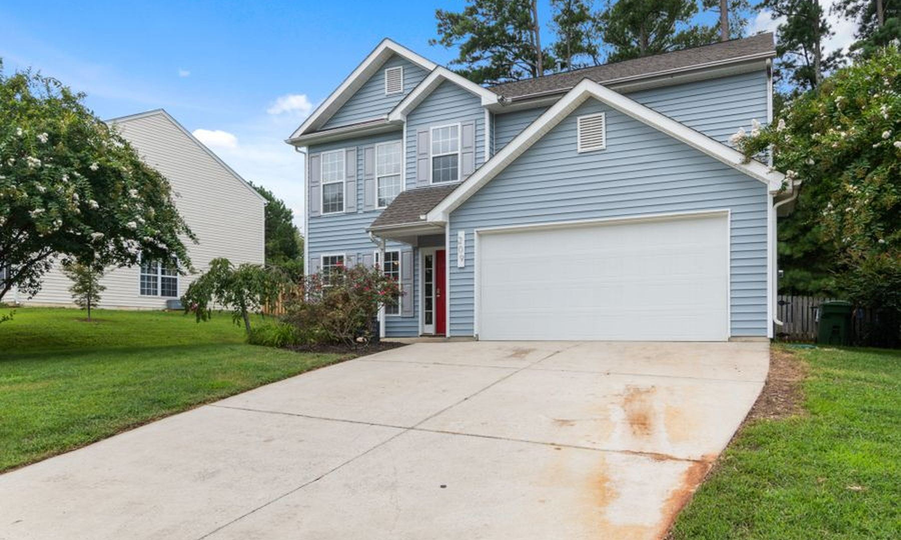
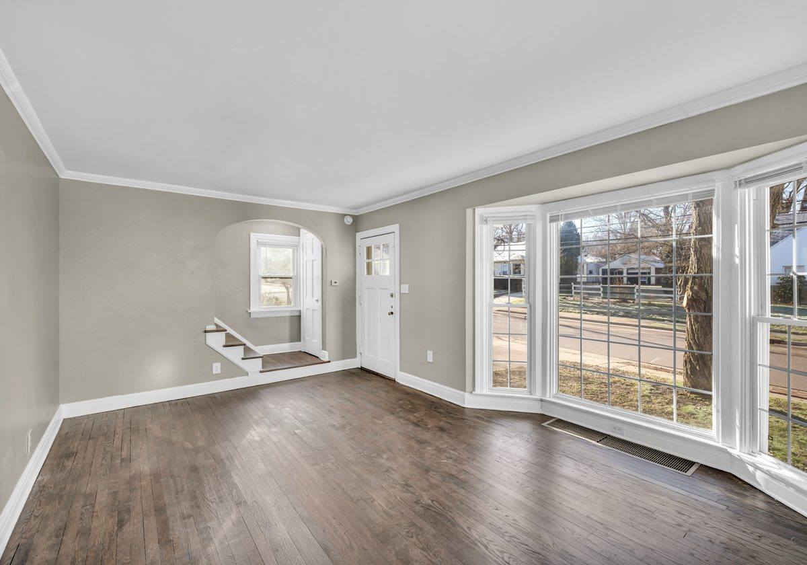

Home / Exterior Painting
Exterior House Painting in Western Kentucky
Siding, trim, garages and commercial buildings across Graves, Calloway, Marshall, McCracken and Carlisle counties. Washed, prepped, primed, then finished in Sherwin-Williams so the coat outlives the next few summers.
A repaint is the cheapest thing you can do to a house that changes everything about it. New siding runs into five figures fast. A properly prepped and painted exterior costs a fraction of that and fixes the thing you actually notice from the road.
The catch is that “properly prepped” is doing a lot of work in that sentence. It’s also the part nobody sees, which is exactly why it’s the part that gets skipped.
Why exterior paint fails early
When paint lifts, curls or flakes two summers after it went on, it’s almost never the paint’s fault. It’s one of these:
- It went over chalk or mildew. Old exteriors shed a fine powder. Paint over that and it’s gripping dust, not siding.
- Loose paint stayed put. New coat over failing coat means the new one fails on the same schedule as the old one.
- Bare wood never got primed. Weathered timber drinks paint in unevenly and lets go of it just as unevenly.
- Moisture was trapped underneath. Usually from washing it at full pressure and painting before it dried.
Every one of those is a prep failure, and every one of them is avoidable. It just takes longer, which is why the cheapest quote is usually the most expensive one in the end.
How we actually do it
- 01Walk it with you
We look at the whole exterior together — what’s failing, what’s fine, what’s rot rather than paint. You get a written estimate off the back of that, not a number over the phone.
- 02Soft wash
The surface gets washed down at low pressure to pull off mildew, pollen and chalk. Then it gets time to dry properly.
- 03Scrape, sand, feather
Anything loose comes off. Edges get feathered back so you don’t read every old failure line through the fresh coat.
- 04Prime the bare spots
Exposed wood and problem areas get spot-primed. This is the step that decides whether you’re repainting in three years or fifteen.
- 05Caulk and cut in
Gaps get sealed, lines get cut by hand. Trim is where a paint job is judged, so it’s where the time goes.
- 06Paint, then clean up
Sherwin-Williams goes on. When we leave, the only sign we were there is the house.
What we paint
- Exterior house painting — vinyl, wood, fiber cement, brick and masonry
- Exterior trim — fascia, soffits, window and door surrounds, shutters
- Garages — doors, frames and detached buildings
- Commercial exteriors — storefronts, offices and rental property

On paint
We use Sherwin-Williams, every job. Not because it’s a name to drop, but because exterior coatings are where the difference between good and cheap shows up fastest — in how the color holds and how long the film stays flexible through a Kentucky summer-to-winter swing.
Already picked a color? Bring it. Haven’t? That’s a normal part of the conversation, and there’s no rush on it.
Where we work
Murray, Mayfield, Paducah, Benton, Fancy Farm, Arlington, Symsonia, Hickory, Wingo, Sedalia, Lowes, and the rest of Graves, Calloway, Marshall, McCracken and Carlisle counties. If you’re near the edge of that, ask anyway.
Next step
Get a number you can actually plan around.
Tell us about the property and we’ll come look at it. The estimate is free and it’s written down.